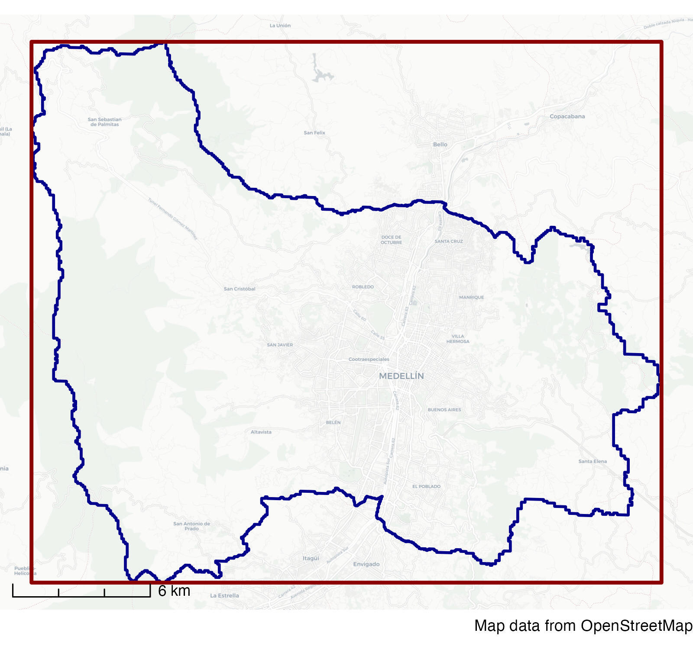
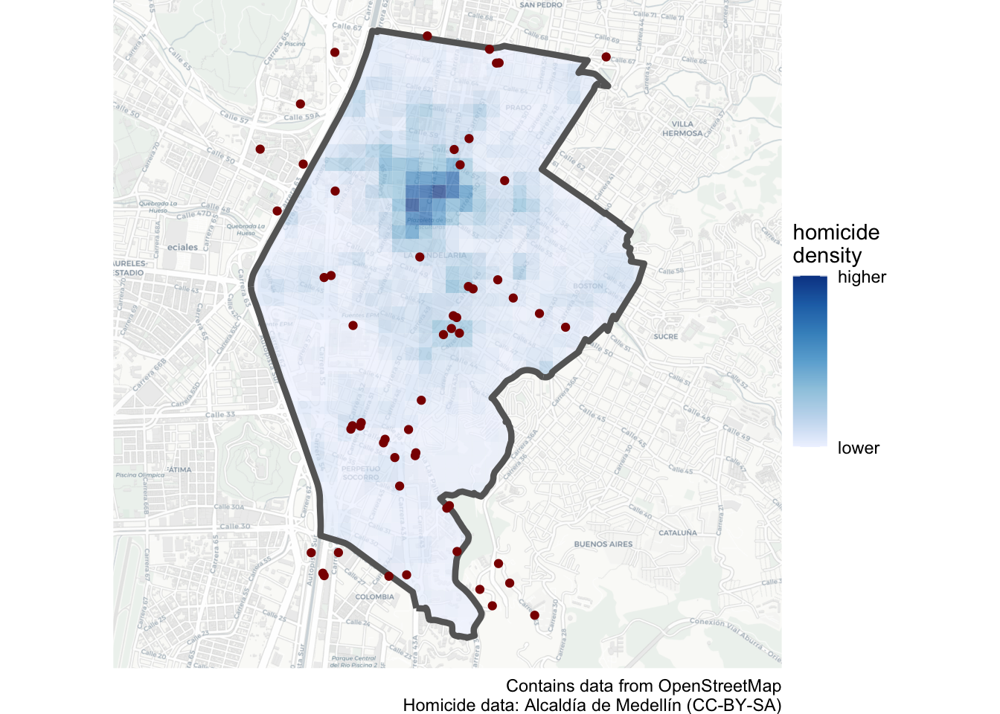

Learn how to find and use extra data about places to improve your maps, including open data and data from OpenStreetMap
Important
This chapter has not yet been updated for 2025, so some material is out of date. Check back for an update in mid-February 2025.
10.1 Introduction
The purpose of most crime maps is to help people make decisions, be they professionals working out how best to respond to crime problems or citizens holding local leaders to account. We can make it easier for people to make decisions by putting crime data into a relevant context. We have already started to do this by adding base maps, titles, legends and so on to our maps.
Since crime is concentrated in a few places, readers of our crime maps will often be interested in understanding what features of the environment are related to specific concentrations of crime in particular places. Where patterns of crime are related to particular facilities – such as late-night violence being driven by the presence of bars selling alcohol – it can be useful to highlight specific features on our maps.
As an example, imagine you are the manager responsible for security on the metro network in Medellin, Colombia. There are several mountains within Medellin, so the city metro network consists of both railway lines in the valley and cable cars up the mountains. The security manager for the metro company will certainly analyse violence on the company’s stations and vehicles, but may also be interested in which stations are in neighbourhoods that themselves have high levels of violence.
To help with this, you might produce a map showing the density of homicides recorded by local police.
This is an acceptable crime map: it shows the data in a reasonable way, places the data layer at the top of the visual hierarchy and provides suitable context in the title, legend etc. But it is a much less useful map than it could be because it doesn’t show where the metro stations are and this information is not included in the base map. A much better map would add extra layers of data showing the metro stations and the line connecting them.
From this second map, it is much easier to see that Parque Berrío and Prado stations are closest to an area with relatively high numbers of homicides.
In this tutorial we will learn how to find relevant data about places and add extra layers to our maps to help readers understand the context within which crimes occur.
To get started, watch this video that walks through the code needed to download data from OpenStreetMap for use on our maps.
10.2 Loading CSV data
Throughout this tutorial, we will use homicides in the Colombian city of Medellin as an example. Data on the locations of homicides in Medellin from 2010 to 2019 is available at https://mpjashby.github.io/crimemappingdata/medellin_homicides.csv.
In previous tutorials, we have used the read_csv() function from the readr package to load data from CSV files. The read_csv() function assumes that (as the name ‘comma-separated values’ suggests) the columns in a CSV file are separated by commas (,). But not all countries use commas as the column separator in CSV files: some countries use semi-colons (;) instead. This is usually because those countries also use commas instead of periods as the decimal separator inside numbers (so that the number three-point-one-four is written 3,14 instead of 3.14 as in English). If commas are used as decimal separators in numbers in a file, commas cannot also be used to separate columns from one another – otherwise there would be no way to know if a comma represented the decimal mark in a number or the boundary between two columns.
If we try to load a CSV file that uses semi-colon separators using the read_csv() function, all the data on each row will be loaded as a single column:
Warning: One or more parsing issues, call `problems()` on your data frame for details,
e.g.:
dat <- vroom(...)
problems(dat)
Rows: 9360 Columns: 1
── Column specification ────────────────────────────────────────────────────────
Delimiter: ","
chr (1): fecha_hecho;longitud;latitud;sexo;edad;modalidad
ℹ Use `spec()` to retrieve the full column specification for this data.
ℹ Specify the column types or set `show_col_types = FALSE` to quiet this message.
head(medellin_homicides)
# A tibble: 6 × 1
`fecha_hecho;longitud;latitud;sexo;edad;modalidad`
<chr>
1 2019-04-23T12:30:00Z;-75,56985400000;6,25722555000;Mujer;50;Ahorcamiento o es…
2 2019-05-12T00:51:00Z;-75,61036800000;6,22280611000;Hombre;24;Arma de fuego
3 2019-05-12T02:36:00Z;-75,62039100000;6,26238217000;Hombre;34;Arma de fuego
4 2019-05-12T03:03:00Z;-75,56176640000;6,26958878000;Hombre;20;Arma de fuego
5 2019-05-12T22:40:00Z;-75,53268500000;6,23627692000;Hombre;34;Arma de fuego
6 2019-05-12T19:30:00Z;-75,64195830000;6,19619536500;Hombre;25;Arma de fuego
This is obviously not what we want, so we need to use a different function to load this data. Fortunately, the readr package has another function that can handle CSV files created using the conventions of countries that use semi colons to separate columns: read_csv2().
How should you know when to use read_csv2() rather than read_csv()? If you don’t know whether a file uses commas or semi colons to separate columns, the easiest thing is probably to use read_csv() first. Now load the file and use head() to look at the first few rows: if you see all the data has appeared in a single column that contains several semi colons, then you’ll know to change your code to use read_csv2() instead.
For this dataset, if you load it with read_csv2() you should find that the structure of the data is more as you’d expect it to be.
ℹ Using "','" as decimal and "'.'" as grouping mark. Use `read_delim()` for more control.
Rows: 9360 Columns: 6
── Column specification ────────────────────────────────────────────────────────
Delimiter: ";"
chr (2): sexo, modalidad
dbl (3): longitud, latitud, edad
dttm (1): fecha_hecho
ℹ Use `spec()` to retrieve the full column specification for this data.
ℹ Specify the column types or set `show_col_types = FALSE` to quiet this message.
head(medellin_homicides)
# A tibble: 6 × 6
fecha_hecho longitud latitud sexo edad modalidad
<dttm> <dbl> <dbl> <chr> <dbl> <chr>
1 2019-04-23 12:30:00 -75.6 6.26 Mujer 50 Ahorcamiento o estrangulami…
2 2019-05-12 00:51:00 -75.6 6.22 Hombre 24 Arma de fuego
3 2019-05-12 02:36:00 -75.6 6.26 Hombre 34 Arma de fuego
4 2019-05-12 03:03:00 -75.6 6.27 Hombre 20 Arma de fuego
5 2019-05-12 22:40:00 -75.5 6.24 Hombre 34 Arma de fuego
6 2019-05-12 19:30:00 -75.6 6.20 Hombre 25 Arma de fuego
In the rest of this tutorial we will use data from different sources to better understand clusters of homicides in the La Candelaria neighbourhood of downtown Medellin.
10.2.1 Check your understanding
quiz(caption ="",question("Which function should you use to load a CSV file of crime locations that uses semi-colons to separate the columns?",answer("`read_csv2()` from the `readr` package", correct =TRUE),answer("`read_csv()` from the `readr` package",message ="`read_csv()` is used to load CSV files that use commas to separate columns." ),answer("`read.csv2()` from the `base` package",message ="While the `read.csv2()` function from the `base` package will load CSV files that use semi-colons to separate columns, it is better to use a function from the `readr` package so that the loaded data will be in a tibble rather than a data frame, and so that text values will not be silently changed to categorical values." ),answer("`read_sf()` or `st_read()` from the `sf` package",message ="CSV is not a spatial file format (even when it contains columns that represent co-ordinates), so it is best not to load them with functions from the `sf` package (which expect to handle spatial file formats). While `read_sf()` and `st_read()` can open CSV files, both functions assume all the columns contain text values, meaning you then have to use another function to convert column values to numbers, dates, etc." ),correct =random_praise(),allow_retry =TRUE,random_answer_order =TRUE ))
10.3 Finding data
If you are producing crime maps on behalf of a particular organisation such as a police agency or a body responsible for managing a place, it is likely that they will hold spatial data that is relevant to the local area. For example, many city governments will hold records of local businesses. It will sometimes be necessary to track down which department or individual holds this data, and it may also be necessary to convert data into formats that are useful for spatial analysis.
Some organisations may also have agreements to share data with others. For example, both universities and public agencies such as police forces in the United Kingdom have agreements with the national mapping agency Ordnance Survey to share a wide variety of spatial data. If you are producing maps on behalf of an organisation, it will often be useful to ask what data they hold that might be relevant, or ask for a specific dataset you think would help improve a map.
10.3.1 Open data
Open data is data that is released by organisations or individuals that can be freely used by others. Organisations such as local governments increasingly release data about their areas as open data – almost all of the data we have used so far in this course is open data released by different local and national governments.
Open data is extremely useful because you can skip the often lengthy and painful process of getting access to data and wrangling it into a format you can use. This means you can move on much more quickly to analysing data, reaching conclusions and making decisions. Watch this video to find out more about the value of open data.
Open data is published in a wide variety of formats and distributed in different ways. Some data might only be distributed by an organisation sending you a DVD or memory stick. Most of the time, however, data will be released online.
Many cities (especially but not only in developed countries) now maintain open-data websites that act as a repository for all their open data. For example, the City of Bristol in England publishes the Open Data Bristol website. Anyone can use this website to download data on everything from population estimates to politicians’ expenses. Many of these datasets can be useful for crime mapping. For example, you can download the locations of CCTV cameras (useful in criminal investigations), street lights (relevant to designing out crime) and the catchment areas of secondary schools (helpful if a crime-prevention strategy includes visits to schools).
Different local governments may use different terms for the same types of information, so it sometimes takes some trial and error to find if a particular dataset is available. Some data might also be held by organisations other than the main local government agency for a particular place. For example, data on the locations of electricity substations (useful if you are trying to prevent metal thefts from infrastructure networks) might be held by a power company. All this means that tracking down a particular dataset might require some detective work.
Organisations that provide data often do so on condition that users of the data follow certain rules. For example, you can use data on the Open Data Bristol website as long as you follow the conditions of the Open Government Licence. The most-common requirement of an open-data licence is that anyone using the data acknowledges the data source in any maps, reports or other outputs they produce. In the case of the Open Government Licence, users of the data are required to add a declaration to any outputs declaring:
Contains public sector information licensed under the Open Government Licence v3.0.
Complying with open-data licences is a legal requirement, so it is important to make sure you understand what obligations you are accepting when you use a particular dataset. You can typically find the conditions for using a dataset on the website that you download the data from. If you are required to add an attribution statement to your maps, a good place to do this is by adding it to any other information you place in the caption argument of the labs() function in a ggplot() stack.
10.3.3 Check your understanding
quiz(caption ="",question("Which one of these statements about open data is true?",answer("We can use open data for any purpose as long as we comply with the requirements of the licence the data is released under.", correct =TRUE),answer("We can use open data for any purpose -- there is no need to acknowledge the source of the data.",message ="While we can often use open data for almost any purpose, it is important to comply with the requirements of the licence the data was released under. Most open-data licences include a requriement to acknowledge the source of the data." ),answer("We can use open data, but only for non-commercial purposes.",message ="Most open data licences allow us to use data for both commercial and non-commercial purposes, as long as we comply with the other requirements of the licence -- most often this includes a requriement to acknowledge the source of the data." ),answer("We can download open data but we cannot use it for any project that will be published online.",message ="Organisations usually publish open data to make it easier for other organisations and individuals to use that data to make products and analyse local issues. It would be extremely unusual for an open-data licence to stop people from using the data in a project that was going to be published online." ),correct =random_praise(),allow_retry =TRUE,random_answer_order =TRUE ))
10.4 Shapefiles
In this course we have used spatial data provided in different formats including geopackages (.gpkg) and geoJSON (.geojson) files, as well as creating spatial objects from tabular data in formats like CSV and Excel files. But there is one spatial-data format that we haven’t yet learned to use: the shapefile.
The shapefile format was created by Esri, the company that makes the ArcGIS suite of mapping software. It was perhaps the first spatial format that could be read by a wide variety of mapping software, which meant that lots of providers of spatial data began to provide data in shapefile format. Shapefiles are limited in various ways that mean they are unlikely to be a good choice for storing your own data, but it is important to know how to use them because many spatial datasets are still provided as shapefiles for historical reasons.
One of the complications of using shapefiles (and why they’re not a good choice for storing your own data) is that different parts of the data are stored in separate files. So while the co-ordinates of the points, line or polygons are stored in a file with a .shp extension, the non-spatial attributes of each spatial feature (such as the date on which a crime occurred or the name of a neighbourhood) are stored in a separate file with a .dbf extension and details of the co-ordinate reference system are stored in a .prj file – a single dataset might be held in up to 16 separate files on a computer. All the files that make up a shapefile have the same file name, differing only in the file extension (e.g. .shp, .dbf, etc.). For example, if a .shp file is called robberies.shp then it will be accompanied by a file called robberies.dbf and one called robberies.prj, as well as a robberies.shx index file and possibly several others. All these separate files make it more-complicated to manage shapefiles than other spatial file formats such as the geopackage.
Because storing spatial data in a shapefile requires multiple different files, shapefile data is usually distributed in a .zip file that contains all the component files. This means that to access a shapefile will have to add a step to our usual routine for downloading and opening a data file. To minimise the hassle associated with using shapefiles, in general we will:
download the .zip file if we don’t have a local copy already,
create a temporary directory where we can store the unzipped shapefile, so we can save space on our computers by only permanently keeping the (often much smaller) .zip file,
unzip the .zip file into the temporary directory,
load the shapefile data from the temporary directory.
For example, the routes of metro lines in Medellin are available in shapefile format at:
To load the data from this file, we can use the process shown above.
Unfortunately it isn’t possible to run this code within this interactive tutorial because of security restrictions on saving files on your computer from within a tutorial. You can test this code by copying it into a new R Script in RStudio and running the code from there. Note that this code assumes you have already loaded the sf and tidyverse packages.
# Step 1: download the .zip file to a temporary filemetro_lines_file <-tempfile(fileext =".zip")download.file(url ="https://mpjashby.github.io/crimemappingdata/medellin_metro_lines.zip", destfile = metro_lines_file)# Step 2: create a temporary directory# The `tempdir()` function returns a location on your computer that is used for# storing temporary files. *Any files stored in this temporary directory will be# deleted when you restart your computer*, so it's a useful place to put files# that you will only need for a short time so they won't clutter up your# computer. Since we want to store the shapefile in a sub-directory of the# temporary directory, we will use `str_glue()` to add a relevant sub-directory# name to the end of the temporary directory name -- `unzip()` will then# create this directory in the background at Step 3.metro_lines_dir <-str_glue("{tempdir()}/metro_lines")# Step 3: unzip fileunzip(metro_lines_file, exdir = metro_lines_dir)# Step 5: load the datamedellin_metro_lines <- metro_lines_dir |>str_glue("/medellin_metro_lines.shp") |>read_sf()
Note that although a shapefile consists of several different files, we only need to load the file with the extension .shp – the read_sf() function will find all the data it needs from the other files.
Once we have loaded a shapefile into R using read_sf(), we can treat it in the same way as any other spatial dataset – it is only loading shapefiles that is different from other spatial data formats.
How did you know the name of the medellin_metro_lines.shp file?
If you need to find out the name of the shapefile within the zip file, you can use the list = TRUE argument to the unzip() function to produce a list of files that are inside the zip file rather than unzip any files. For example, the code unzip(metro_lines_file, list = TRUE) would produce a data frame of file names:
Name
Length
Date
medellin_metro_lines.dbf
2299
2023-02-06 22:46:00
medellin_metro_lines.prj
145
2023-02-06 22:46:00
medellin_metro_lines.shp
16076
2023-02-06 22:46:00
medellin_metro_lines.shx
172
2023-02-06 22:46:00
Make sure you run unzip(metro_lines_file, list = TRUE) in the R console rather than in your script file, to minimise the amount of unnecessary output that your script produces.
10.5 Data from OpenStreetMap
Often we can get map data from the organisation we are working for, or from open-data portals run by governments or international organisations. But sometimes they won’t hold the information we need.
Fortunately, there is another source of data: OpenStreetMap (OSM). This is a global resource of map data created by volunteers (and started at UCL), using a mixture of open data from governments, data contributed by charities and data collected by the volunteers themselves. Watch this video to learn a bit more about OpenStreetMap.
We have already used OSM data in this course: all of the base maps we have used when we create maps with ggplot() are based on data from OpenStreetMap. But we have very little control over which information is and is not included in base maps. Sometimes we need more control over the data, and that means downloading data direct from OSM.
We can download OSM data into R using the osmdata package. This package allows us to choose particular features from the billions of features worldwide that are included in the OSM database. To choose features, we must:
specify the bounding box of the area we want to download data for using the opq() function,
specify what type of features we want to download using the add_osm_feature() function,
download the data using the osmdata_sf() function, and
extract the type of spatial object (points, lines or polygons) that we are interested in.
Imagine that in your analysis of homicides in Medellin, you have been asked to consider the question of whether homicides are clustered near to bus stops. To answer this question, we need to know the locations of bus stops in the area we are interested in. This information is not published as open data by the Medellin city authorities. Fortunately we can extract bus-stop locations from OpenStreetMap using the osmdata package.
To do this, we first need to calculate the bounding box of the La Candelaria neighbourhood that we are interested in. A bounding box is the smallest rectangle that a particular spatial shape will fit inside. For example, the red rectangle on this map shows the bounding box of the city of Medellin (shown in blue).

You can calculate the bounding box of an SF object using the st_bbox() function.
Assuming we have already loaded the neighbourhood boundaries into an object called medellin_comunas, write the code needed to filter that object so that only the boundary for the La Candelaria neighbourhood is included, then calculate the bounding box for that layer and store it in an object called la_candelaria_bbox.
Note that the medellin_comunas object uses the Colombia MANGA West Zone co-ordinate system (EPSG code 3115), but the osmdata package only works with bounding boxes specified as longitudes and latitudes. This means you will also need to transform the dataset to use the WGS84 co-ordinate system (EPSG code 4326) before you calculate the bounding box.
# You can use the `filter()` function to filter only the rows of data that you # want to keep in the data
# Remember to use `st_transform()` to make sure the data uses the correct# co-ordinate system. You can use the `st_bbox()` function to calculate the # bounding box of the 52nd division boundary.
# If you need to find out the name of the relevant variable in the # `medellin_comunas` object, you can use `head(medellin_comunas)` to see the # first few rows.
The second thing we need to know is what search terms to use in the add_osm_feature() function to return the locations of bus stops. OpenStreetMap has hundreds of feature categories, all in the format key=value. Sometimes we will only need to search for a particular key (category of feature), such as the highway key that contains all the features that show roads (from motorways to winding lanes leading to farms in the countryside), tracks and paths. In other cases, we will want to search for a particular value (type of feature within a category), such as searching for the value natural=water to search for lakes, rivers, etc.
The best place to find out how a feature you are interested in is recorded in the OSM database is to look at the OpenStreetMap Wiki. Bus stops are recorded in OSM using the tag highway=bus_stop.
Now that we know the bounding box of the area we are interested in and the tag for the type of feature we want, we can download the data from OpenStreetMap.
# Define the bounding box of the area we want to searchbus_stops <-opq(la_candelaria_bbox) |># Define the features we wantadd_osm_feature(key ="highway", value ="bus_stop") |># Download those features for that areaosmdata_sf()# Print the result (note the result is not a data frame, so we cannot use the# `head()` function)bus_stops
Object of class 'osmdata' with:
$bbox : 6.22450932830104,-75.5802925457919,6.26512401936258,-75.5538503495463
$overpass_call : The call submitted to the overpass API
$meta : metadata including timestamp and version numbers
$osm_points : 'sf' Simple Features Collection with 55 points
$osm_lines : NULL
$osm_polygons : 'sf' Simple Features Collection with 0 polygons
$osm_multilines : NULL
$osm_multipolygons : NULL
You’ll see that the object bus_stops has quite complicated structure, but that nested within it is an object called osm_points that is an SF object with 55 rows and another SF object called osm_polygons. Even within a particular type of feature, some places might be represented as points (e.g. a point placed at a bus stop) while others are represented as polygons (e.g. the outline of a bus station).
We can use the pluck() function from the purrr package (part of the tidyverse) to extract the parts of the bus_stops object that we want. If we extract the SF object called osm_points and look at the first few rows using bus_stops |> pluck("osm_points") |> head(n = 5), we can see:
bus_stops |>pluck("osm_points") |>head(5)
Simple feature collection with 5 features and 19 fields
Geometry type: POINT
Dimension: XY
Bounding box: xmin: -75.57696 ymin: 6.228165 xmax: -75.56289 ymax: 6.260205
Geodetic CRS: WGS 84
osm_id name access bench bin bus
847830985 847830985 <NA> <NA> no <NA> yes
1561073855 1561073855 La Alpujarra <NA> <NA> <NA> <NA>
2418112357 2418112357 <NA> <NA> <NA> <NA> <NA>
3135948756 3135948756 Barrio Colombia <NA> <NA> <NA> yes
3346088239 3346088239 Carrera 33 Calle 29C <NA> no <NA> <NA>
check_date:shelter covered highway lit local_ref name:en
847830985 <NA> <NA> bus_stop <NA> <NA> <NA>
1561073855 <NA> <NA> bus_stop <NA> La Alpujarra <NA>
2418112357 <NA> <NA> bus_stop <NA> <NA> <NA>
3135948756 <NA> <NA> bus_stop <NA> <NA> <NA>
3346088239 <NA> no bus_stop <NA> <NA> <NA>
network note operator public_transport
847830985 <NA> <NA> <NA> platform
1561073855 <NA> <NA> <NA> <NA>
2418112357 <NA> <NA> <NA> <NA>
3135948756 Metroplus Sentido Norte Sur Metro de Medellín platform
3346088239 <NA> <NA> Metro de Medellín <NA>
shelter source wheelchair geometry
847830985 yes <NA> <NA> POINT (-75.57696 6.260205)
1561073855 <NA> <NA> <NA> POINT (-75.57342 6.245391)
2418112357 <NA> <NA> <NA> POINT (-75.56893 6.24997)
3135948756 yes <NA> yes POINT (-75.56982 6.228716)
3346088239 no <NA> <NA> POINT (-75.56289 6.228165)
We can see from this that most of the fields are blank, but there is a name column and a geometry column that we can use to plot the locations of the bus stops.
We also need to check the contents of the osm_polygons layer inside the bus_stops object, to see if it contains details of a any more bus stops that are not included in the osm_points layer.
Type the code needed to extract the osm_polygons layer and view the first few rows.
To check this, we can again use the pluck() function:
bus_stops |>pluck("osm_polygons") |>head(5)
Simple feature collection with 0 features and 1 field
Bounding box: xmin: NA ymin: NA xmax: NA ymax: NA
Geodetic CRS: WGS 84
[1] osm_id geometry
<0 rows> (or 0-length row.names)
In this case, we can see that there are 0 rows in the osm_polygons object. In cases where we have data contained in both the osm_points and osm_polygons layers, we need to merge the two layers by converting the polygon layer to a point layer using the st_centroid() function and then merging the two layers using the bind_rows() function from the dplyr package. We can put all this together into one piece of code.
Simple feature collection with 55 features and 19 fields
Geometry type: POINT
Dimension: XY
Bounding box: xmin: -75.57967 ymin: 6.226014 xmax: -75.55641 ymax: 6.264754
Geodetic CRS: WGS 84
First 10 features:
osm_id name access bench bin bus
847830985 847830985 <NA> <NA> no <NA> yes
1561073855 1561073855 La Alpujarra <NA> <NA> <NA> <NA>
2418112357 2418112357 <NA> <NA> <NA> <NA> <NA>
3135948756 3135948756 Barrio Colombia <NA> <NA> <NA> yes
3346088239 3346088239 Carrera 33 Calle 29C <NA> no <NA> <NA>
3346088240 3346088240 Carrera 34 Calle 29C <NA> no <NA> <NA>
3346088241 3346088241 Carrera 34 <NA> no <NA> <NA>
3346088242 3346088242 Calle 29 Av. Las Palmas <NA> no <NA> <NA>
3346088245 3346088245 Carrera 38 Av. Las Palmas <NA> yes no <NA>
3346088246 3346088246 Carrera 38 Avenida Las Palmas <NA> no <NA> <NA>
check_date:shelter covered highway lit local_ref name:en
847830985 <NA> <NA> bus_stop <NA> <NA> <NA>
1561073855 <NA> <NA> bus_stop <NA> La Alpujarra <NA>
2418112357 <NA> <NA> bus_stop <NA> <NA> <NA>
3135948756 <NA> <NA> bus_stop <NA> <NA> <NA>
3346088239 <NA> no bus_stop <NA> <NA> <NA>
3346088240 <NA> no bus_stop <NA> <NA> <NA>
3346088241 <NA> no bus_stop <NA> <NA> <NA>
3346088242 <NA> no bus_stop <NA> <NA> <NA>
3346088245 <NA> no bus_stop <NA> <NA> <NA>
3346088246 <NA> no bus_stop <NA> <NA> <NA>
network note operator public_transport
847830985 <NA> <NA> <NA> platform
1561073855 <NA> <NA> <NA> <NA>
2418112357 <NA> <NA> <NA> <NA>
3135948756 Metroplus Sentido Norte Sur Metro de Medellín platform
3346088239 <NA> <NA> Metro de Medellín <NA>
3346088240 <NA> <NA> Metro de Medellín <NA>
3346088241 <NA> <NA> Metro de Medellín <NA>
3346088242 <NA> <NA> Metro de Medellín <NA>
3346088245 <NA> <NA> Metro de Medellín <NA>
3346088246 <NA> <NA> Metro de Medellín <NA>
shelter source wheelchair geometry
847830985 yes <NA> <NA> POINT (-75.57696 6.260205)
1561073855 <NA> <NA> <NA> POINT (-75.57342 6.245391)
2418112357 <NA> <NA> <NA> POINT (-75.56893 6.24997)
3135948756 yes <NA> yes POINT (-75.56982 6.228716)
3346088239 no <NA> <NA> POINT (-75.56289 6.228165)
3346088240 no <NA> <NA> POINT (-75.56364 6.229471)
3346088241 no <NA> <NA> POINT (-75.5649 6.227743)
3346088242 no <NA> <NA> POINT (-75.56406 6.226646)
3346088245 no <NA> <NA> POINT (-75.56695 6.233343)
3346088246 no <NA> <NA> POINT (-75.56712 6.233176)
What does the warning st_centroid assumes … mean?
You might have seen a warning saying st_centroid assumes attributes are constant over geometries of x. You will see this warning when you use the st_centroid() function. It is there to remind you that columns in the original data (which the SF package refers to as the attributes associated with each spatial feature) refer to the polygon as a whole, but in the object produced by st_centroid() it will appear that the columns relate to the centroid point. In many cases this will not be a problem, but it could expose you to the ecological fallacy so it is sometimes useful to be reminded.
This code references the bus_stops object twice, which means we cannot use this code within a pipeline in the usual way. This means it will be necessary to save the result produced by osmdata_sf() in an object and then combine the points and polygon centroids in a separate piece of code.
We now have everything we need to map homicides in La Candelaria in relation to bus stops. Create a map showing a suitable base map, the density of homicides in the La Candelaria neighbourhood, the locations of bus stop as individual points and the boundary of the neighbourhood.
You will need to:
Create an object holding the boundary of the La Candelaria neighbourhood. Remember the boundaries of Medellin neighbourhoods are contained in the medellin_comunas object.
Estimate the density of homicides in the La Candelaria neighbourhood. The homicide locations are stored in the medellin_homicides object, although you will probably want to extract only those in La Candelaria before estimating the density.
Extract the bounding box of the neighbourhood boundary and use that to get the locations of bus stops, taking into account that some bus stops might be stored in the OSM database as points and others as polygons.
Create a map showing the density of homicides, the locations of bus stops and the boundary of the neighbourhood.
Now that we have everything we need, we can create a map of homicides in La Candelaria.
# There are lots of design decisions you could make in producing a map -- the# following code is a minimal map, which you could improve on in several ways# Load datamedellin_comunas <-read_sf("https://mpjashby.github.io/crimemappingdata/medellin_comunas.gpkg") |> janitor::clean_names() |>st_transform("EPSG:3115") |>select(nombre, geom)medellin_homicides <-read_csv2("https://mpjashby.github.io/crimemappingdata/medellin_homicides.csv") |>remove_missing(vars =c("longitud", "latitud")) |>st_as_sf(coords =c("longitud", "latitud"), crs ="EPSG:4326")
ℹ Using "','" as decimal and "'.'" as grouping mark. Use `read_delim()` for more control.
Rows: 9360 Columns: 6
── Column specification ────────────────────────────────────────────────────────
Delimiter: ";"
chr (2): sexo, modalidad
dbl (3): longitud, latitud, edad
dttm (1): fecha_hecho
ℹ Use `spec()` to retrieve the full column specification for this data.
ℹ Specify the column types or set `show_col_types = FALSE` to quiet this message.
Warning: Removed 81 rows containing missing values or values outside the scale
range.
# Create neighbourhood boundaryla_candelaria <- medellin_comunas |>filter(nombre =="LA CANDELARIA") |># This object needs to use the same co-ordinate system as `medellin_homicides`# so we can use `st_intersection()`, so transform it firstst_transform("EPSG:3115")# Estimate homicide densityla_candelaria_homicide_density <- medellin_homicides |>st_transform("EPSG:3115") |># Extract only those homicides occurring within the La Candelaria # neighbourhood boundary (otherwise `hotspot_kde()` will be very slow)st_intersection(la_candelaria) |>hotspot_kde(grid =hotspot_grid(la_candelaria, cell_size =100), bandwidth_adjust =0.33,quiet =TRUE ) |>st_intersection(la_candelaria)
Warning: attribute variables are assumed to be spatially constant throughout
all geometries
Warning: attribute variables are assumed to be spatially constant throughout
all geometries
# Get bus stop locationsbus_stops <- la_candelaria |># `opq()` needs longitude/latitude co-ordinates, so transform before # calculating the bounding boxst_transform("EPSG:4326") |>st_bbox() |>opq() |># Define the features we wantadd_osm_feature(key ="highway", value ="bus_stop") |># Download those features for that areaosmdata_sf()# Extract bus stop locations as pointsbus_stop_points <-bind_rows(pluck(bus_stops, "osm_points"), st_centroid(pluck(bus_stops, "osm_polygons")))# Plot mapggplot() +annotation_map_tile(type ="cartolight", zoomin =0, progress ="none") +geom_sf(aes(fill = kde), data = la_candelaria_homicide_density, alpha =0.7, colour =NA ) +geom_sf(data = la_candelaria, colour ="grey40", fill =NA, linewidth =1.5) +geom_sf(data = bus_stop_points, colour ="darkred") +scale_fill_distiller(direction =1, breaks =range(pull(la_candelaria_homicide_density, "kde")),labels =c("lower", "higher") ) +labs(caption =str_glue("Contains data from OpenStreetMap\n","Homicide data: Alcaldía de Medellín (CC-BY-SA)" ),fill ="homicide\ndensity" ) +# We can add the `fixed_plot_aspect()` function to the `ggplot()` stack to# force the map to be square, rather than a rectanglefixed_plot_aspect() +theme_void()

From this map, it looks like homicides do not cluster particularly around bus stops. This would probably be welcome information for the city’s public transport managers.
Just as with other sources of map data, you are legally required to cite data from OpenStreetMap if you use it. The code in the exercise above, for example, cites data from two sources:
“Contains data from OpenStreetMap” acknowledges that both the base map and the bus-stop locations were obtained from OpenStreetMap.
“Homicide data: Alcaldía de Medellín (CC-BY-SA)” acknowledges that the Medellin homicide data were released by the Mayor of Medellin under the Creative Commons Attribution Share-alike (CC-BY-SA) licence.
The OpenStreetMap logo is a trademark of the OpenStreetMap Foundation, and is used with their permission. This tutorial not endorsed by or affiliated with the OpenStreetMap Foundation.
10.6 In summary
In this tutorial we have learned how to find open data, including data from OpenStreetMap, and add it to our maps to help readers better understand crime patterns. We will be able to use these skills to add data to future maps that we make so that readers can gain more insight into crime patterns or other phenomena that we might be analysing.
To find out more about the skills we have worked on in this tutorial, you may want to read:
---execute: freeze: auto---# Using data about places {#sec-place-data}**Learn how to find and use extra data about places to improve your maps, including open data and data from OpenStreetMap**::: {.callout-important}This chapter has not yet been updated for 2025, so some material is out of date. Check back for an update in mid-February 2025.:::```{r setup, include=FALSE, cache=FALSE}#| echo: false#| include: falsesource(here::here("mask_learnr_functions.R"))# Load packageslibrary(ggspatial)library(leaflet)library(osmdata)library(sf)library(sfhotspot)library(tidyverse)# Load data --------------------------------------------------------------------# Neighbourhoodsmedellin_comunas <- read_sf("https://mpjashby.github.io/crimemappingdata/medellin_comunas.gpkg") |> janitor::clean_names() |> st_transform("EPSG:3115") |> select(nombre, geom)# Homicidesmedellin_homicides <- read_csv2("https://mpjashby.github.io/crimemappingdata/medellin_homicides.csv") |> remove_missing(vars = c("longitud", "latitud")) |> st_as_sf(coords = c("longitud", "latitud"), crs = "EPSG:4326")# Metro linesmetro_lines_file <- tempfile(fileext = ".zip")download.file( url = "https://mpjashby.github.io/crimemappingdata/medellin_metro_lines.zip", destfile = metro_lines_file)unzip(metro_lines_file, exdir = tempdir())medellin_metro_lines <- tempdir() |> str_glue("/medellin_metro_lines.shp") |> read_sf()# Metro stationsmedellin_metro_stns <- read_csv("https://mpjashby.github.io/crimemappingdata/medellin_metro_stns.csv") |> mutate( nombre = str_remove(str_remove(nombre, "Estación "), " \\(Línea \\w\\)") ) |> group_by(nombre) |> summarise(across(everything(), first)) |> st_as_sf(coords = c("x", "y"), crs = "EPSG:4326", remove = FALSE)# Bus stops# We are downloading this data direct from source for two reasons:# 1. OSM is a live database and the results are likely to change over time.# 2. The structure of the result object might change slightly, in which case# the tutorial should reflect what students will actually see.# This obviously carries the risk that the data will stop being available or the# API will be down when a student tries to use the tutorial.la_candelaria_bbox <- medellin_comunas |> filter(nombre == "LA CANDELARIA") |> st_transform("EPSG:4326") |> st_bbox()bus_stops <- la_candelaria_bbox |> opq() |> add_osm_feature(key = "highway", value = "bus_stop") |> osmdata_sf()```## IntroductionThe purpose of most crime maps is to help people make decisions, be they professionals working out how best to respond to crime problems or citizensholding local leaders to account. We can make it easier for people to make decisions by putting crime data into a relevant context. We have already started to do this by adding base maps, titles, legends and so on to our maps.Since crime is concentrated in a few places, readers of our crime maps will often be interested in understanding what features of the environment are related to specific concentrations of crime in particular places. Where patterns of crime are related to particular facilities -- such as late-night violence being driven by the presence of bars selling alcohol -- it can be useful to highlight specific features on our maps.As an example, imagine you are the manager responsible for security on the metronetwork in Medellin, Colombia. There are several mountains within Medellin, so the city metro network consists of both railway lines in the valley and cable cars up the mountains. The security manager for the metro company will certainly analyse violence on the company's stations and vehicles, but may also be interested in which stations are in neighbourhoods that themselves have high levels of violence.To help with this, you might produce a map showing the density of homicides recorded by local police.```{r metro-homicides-map, eval=FALSE, echo=FALSE}library(ggrepel)medellin_homicides_density <- medellin_homicides |> st_transform("EPSG:3115") |> hotspot_kde( grid = hotspot_grid(medellin_comunas, cell_size = 150), bandwidth_adjust = 0.25 ) |> st_intersection(medellin_comunas)medellin_homicides_map1 <- ggplot() + annotation_map_tile(type = "cartolight", zoomin = 0, progress = "none") + geom_sf( data = medellin_comunas, colour = "grey70", fill = NA, linewidth = 0.5 ) + geom_sf( aes(fill = kde), data = medellin_homicides_density, alpha = 0.75, colour = NA ) + annotation_scale(style = "ticks") + scale_fill_gradient( low = "white", high = "darkred", breaks = range(pull(medellin_homicides_density, "kde")), labels = c("lower", "higher") ) + scale_linetype_manual(values = c("Metro" = "solid", "Cable" = "12")) + lims(x = c(-75.65, -75.525), y = c(6.19, 6.325)) + coord_sf(crs = "EPSG:4326") + labs( title = "Parque Berrío and Prado stations are in homicide areas", subtitle = "number of homicides, 2010 to 2019", caption = "Map data from OpenStreetMap", fill = "density of\nhomicides", linetype = NULL ) + theme_void() + theme( legend.key.height = unit(0.4, "lines"), legend.key.width = unit(0.8, "lines"), legend.text = element_text(size = rel(0.7)), legend.title = element_text(size = rel(0.8)), plot.title = element_text(size = rel(0.9)), plot.subtitle = element_text(size = rel(0.8), margin = margin(3, 0, 6, 0)), plot.caption = element_text(colour = "grey67", size = rel(0.7), hjust = 0) )medellin_homicides_map2 <- medellin_homicides_map1 + geom_sf( aes(linetype = sistema), data = medellin_metro_lines, colour = "grey40" ) + geom_sf(data = medellin_metro_stns, size = 1, colour = "grey40") + geom_label_repel( aes(x = x, y = y, label = nombre), data = filter(medellin_metro_stns, linea %in% c("A", "B")), alpha = 0.75, colour = "grey25", fill = "white", label.padding = unit(0.1, "lines"), label.size = NA, min.segment.length = 0, size = 2.2 ) + coord_sf(crs = "EPSG:4326")ggsave( "inst/tutorials/10_place_data/images/medellin_homicides_map1.jpg", medellin_homicides_map1, units = "px", width = 1600, height = 1600)ggsave( "inst/tutorials/10_place_data/images/medellin_homicides_map2.jpg", medellin_homicides_map2, units = "px", width = 1600, height = 1600)```<p class="full-width-image"><img src="images/medellin_homicides_map1.jpg" alt="Map of homicides in Medellin from 2010 to 2019" style="max-height: 600px;"></p>This is an acceptable crime map: it shows the data in a reasonable way, places the data layer at the top of the visual hierarchy and provides suitable context in the title, legend etc. But it is a much less useful map than it could be because it doesn't show where the metro stations are and this information is notincluded in the base map. A much better map would add extra layers of data showing the metro stations and the line connecting them.<p class="full-width-image"><img src="images/medellin_homicides_map2.jpg" alt="Map of homicides in Medellin from 2010 to 2019 with metro stations and lines highlighted" style="max-height: 600px;"></p>From this second map, it is much easier to see that Parque Berrío and Prado stations are closest to an area with relatively high numbers of homicides.In this tutorial we will learn how to find relevant data about places and addextra layers to our maps to help readers understand the context within whichcrimes occur. To get started, watch this video that walks through the code needed to download data from OpenStreetMap for use on our maps.{{< video https://youtu.be/kcpiH6dDWLE >}}## Loading CSV dataThroughout this tutorial, we will use homicides in the Colombian city of Medellin as an example. Data on the locations of homicides in Medellin from 2010 to 2019 is available at `https://mpjashby.github.io/crimemappingdata/medellin_homicides.csv`. In previous tutorials, we have used the `read_csv()` function from the `readr`package to load data from CSV files. The `read_csv()` function assumes that (asthe name 'comma-separated values' suggests) the columns in a CSV file areseparated by commas (`,`). But not all countries use commas as the column separator in CSV files: some countries use semi-colons (`;`) instead. This isusually because those countries also use commas instead of periods as the decimal separator inside numbers (so that the number three-point-one-four iswritten `3,14` instead of `3.14` as in English). If commas are used as decimal separators in numbers in a file, commas cannot also be used to separate columns from one another -- otherwise there would be no way to know if a comma represented the decimal mark in a number or the boundary between two columns.If we try to load a CSV file that uses semi-colon separators using the `read_csv()` function, all the data on each row will be loaded as a singlecolumn:```{r intro-exercise1, exercise=TRUE}library(tidyverse)medellin_homicides <- read_csv("https://mpjashby.github.io/crimemappingdata/medellin_homicides.csv")head(medellin_homicides)```This is obviously not what we want, so we need to use a different function toload this data. Fortunately, the `readr` package has another function that canhandle CSV files created using the conventions of countries that use semi colonsto separate columns: `read_csv2()`.How should you know when to use `read_csv2()` rather than `read_csv()`? If youdon't know whether a file uses commas or semi colons to separate columns, the easiest thing is probably to use `read_csv()` first. Now load the file anduse `head()` to look at the first few rows: if you see all the data hasappeared in a single column that contains several semi colons, then you'll knowto change your code to use `read_csv2()` instead.For this dataset, if you load it with `read_csv2()` you should find that thestructure of the data is more as you'd expect it to be.```{r intro-exercise2, exercise=TRUE}medellin_homicides <- read_csv2("https://mpjashby.github.io/crimemappingdata/medellin_homicides.csv")head(medellin_homicides)```In the rest of this tutorial we will use data from different sources to betterunderstand clusters of homicides in the La Candelaria neighbourhood of downtown Medellin. <!--Use this map (created with the `leaflet` package) to look around theLa Candelaria neighbourhood -- the markers show the locations of the metrostations inside the neighbourhood boundary.-->```{r lacandelaria-map, message=FALSE, warning=FALSE, fig.asp=1, out.width="100%", eval=FALSE, echo=FALSE}la_candelaria <- medellin_comunas |> filter(nombre == "LA CANDELARIA") |> st_transform("EPSG:4326") |> mutate(nombre = str_to_title(nombre))la_candelaria_bbox <- st_bbox(la_candelaria)centro_metro_stns <- medellin_metro_stns |> st_intersection(la_candelaria) |> mutate(nombre = str_glue("{nombre} {str_to_lower(sistema)} station"))leaflet() |> fitBounds( lng1 = pluck(la_candelaria_bbox, "xmin"), lat1 = pluck(la_candelaria_bbox, "ymin"), lng2 = pluck(la_candelaria_bbox, "xmax"), lat2 = pluck(la_candelaria_bbox, "ymax") ) |> addProviderTiles(provider = "Esri.WorldStreetMap") |> addPolygons( data = la_candelaria, color = "darkblue", fill = NA ) |> addPolylines( data = medellin_metro_lines, color = "black", opacity = 1, weight = 2 ) |> addCircleMarkers( data = medellin_metro_stns, color = NA, fill = "black", fillOpacity = 1, radius = 3 ) |> addMarkers( data = centro_metro_stns, label = ~ htmltools::htmlEscape(nombre), labelOptions = labelOptions(textsize = "16px") ) |> addMiniMap(zoomLevelOffset = -3, toggleDisplay = TRUE)```### Check your understanding {.tutorial}```{r intro-quiz}quiz( caption = "", question( "Which function should you use to load a CSV file of crime locations that uses semi-colons to separate the columns?", answer("`read_csv2()` from the `readr` package", correct = TRUE), answer( "`read_csv()` from the `readr` package", message = "`read_csv()` is used to load CSV files that use commas to separate columns." ), answer( "`read.csv2()` from the `base` package", message = "While the `read.csv2()` function from the `base` package will load CSV files that use semi-colons to separate columns, it is better to use a function from the `readr` package so that the loaded data will be in a tibble rather than a data frame, and so that text values will not be silently changed to categorical values." ), answer( "`read_sf()` or `st_read()` from the `sf` package", message = "CSV is not a spatial file format (even when it contains columns that represent co-ordinates), so it is best not to load them with functions from the `sf` package (which expect to handle spatial file formats). While `read_sf()` and `st_read()` can open CSV files, both functions assume all the columns contain text values, meaning you then have to use another function to convert column values to numbers, dates, etc." ), correct = random_praise(), allow_retry = TRUE, random_answer_order = TRUE ))```## Finding dataIf you are producing crime maps on behalf of a particular organisation such asa police agency or a body responsible for managing a place, it is likely thatthey will hold spatial data that is relevant to the local area. For example, many city governments will hold records of local businesses. It will sometimesbe necessary to track down which department or individual holds this data, andit may also be necessary to convert data into formats that are useful for spatial analysis.Some organisations may also have agreements to share data with others. For example, both universities and public agencies such as police forces in theUnited Kingdom have agreements with the national mapping agency Ordnance Surveyto share a wide variety of spatial data. If you are producing maps on behalf ofan organisation, it will often be useful to ask what data they hold that mightbe relevant, or ask for a specific dataset you think would help improve a map.### Open data*Open data* is data that is released by organisations or individuals that can befreely used by others. Organisations such as local governments increasinglyrelease data about their areas as open data -- almost all of the data we haveused so far in this course is open data released by different local and nationalgovernments.Open data is extremely useful because you can skip the often lengthy and painfulprocess of getting access to data and wrangling it into a format you can use. This means you can move on much more quickly to analysing data, reachingconclusions and making decisions. Watch this video to find out more about thevalue of open data.{{< video https://youtu.be/bwX5MAZ6zKI >}}Open data is published in a wide variety of formats and distributed in differentways. Some data might only be distributed by an organisation sending you a DVDor memory stick. Most of the time, however, data will be released online.Many cities (especially but not only in developed countries) now maintain open-data websites that act as a repository for all their open data. For example, the City of Bristol in England publishes the [Open Data Bristol website](https://opendata.bristol.gov.uk/pages/homepage/).Anyone can use this website to download data on everything from populationestimates to politicians' expenses. Many of these datasets can be useful forcrime mapping. For example, you can download the locations of[CCTV cameras](https://opendata.bristol.gov.uk/explore/dataset/council-cctv-cameras/information/)(useful in criminal investigations),[street lights](https://opendata.bristol.gov.uk/explore/dataset/streetlights-and-street-furniture/information/)(relevant to designing out crime) and the [catchment areas of secondary schools](https://opendata.bristol.gov.uk/explore/dataset/secondary-school-areas-of-first-priority/information/)(helpful if a crime-prevention strategy includes visits to schools).Different local governments may use different terms for the same types of information, so it sometimes takes some trial and error to find if a particulardataset is available. Some data might also be held by organisations other thanthe main local government agency for a particular place. For example, data onthe locations of electricity substations (useful if you are trying to preventmetal thefts from infrastructure networks) might be held by a power company. Allthis means that tracking down a particular dataset might require some detectivework.To try to make this process easier, some countries have established nationalopen-data portals such as [Open Data in Canada](https://open.canada.ca/en/open-data/), [Open Government India](https://data.gov.in/),[data.gov.uk in the United Kingdom](https://data.gov.uk/)and [data.gov in the United States](https://www.data.gov/). There are alsointernational repositories such as the [African Development Bank Data Portal](https://dataportal.opendataforafrica.org/),[openAfrica](https://africaopendata.org/), the [Open Data Network](http://www.opendatanetwork.com/) and [Data Portals](https://dataportals.org/), which seeks to list all the open dataportals run by different governments and other organisations.### Citing dataOrganisations that provide data often do so on condition that users of the datafollow certain rules. For example, you can use data on the Open Data Bristol website as long as you follow the conditions of the [Open Government Licence](http://www.nationalarchives.gov.uk/doc/open-government-licence/version/3/).The most-common requirement of an open-data licence is that anyone using the data acknowledges the data source in any maps, reports or other outputs they produce. In the case of the Open Government Licence, users of the data are required to add a declaration to any outputs declaring:> Contains public sector information licensed under the Open Government Licence> v3.0.Complying with open-data licences is a legal requirement, so it is important tomake sure you understand what obligations you are accepting when you use a particular dataset. You can typically find the conditions for using a dataset onthe website that you download the data from. If you are required to add anattribution statement to your maps, a good place to do this is by adding it toany other information you place in the `caption` argument of the `labs()`function in a `ggplot()` stack.### Check your understanding {.tutorial}```{r open-data-quiz}quiz( caption = "", question( "Which one of these statements about open data is true?", answer("We can use open data for any purpose as long as we comply with the requirements of the licence the data is released under.", correct = TRUE), answer( "We can use open data for any purpose -- there is no need to acknowledge the source of the data.", message = "While we can often use open data for almost any purpose, it is important to comply with the requirements of the licence the data was released under. Most open-data licences include a requriement to acknowledge the source of the data." ), answer( "We can use open data, but only for non-commercial purposes.", message = "Most open data licences allow us to use data for both commercial and non-commercial purposes, as long as we comply with the other requirements of the licence -- most often this includes a requriement to acknowledge the source of the data." ), answer( "We can download open data but we cannot use it for any project that will be published online.", message = "Organisations usually publish open data to make it easier for other organisations and individuals to use that data to make products and analyse local issues. It would be extremely unusual for an open-data licence to stop people from using the data in a project that was going to be published online." ), correct = random_praise(), allow_retry = TRUE, random_answer_order = TRUE ))```## ShapefilesIn this course we have used spatial data provided in different formats includinggeopackages (`.gpkg`) and geoJSON (`.geojson`) files, as well as creating spatial objects from tabular data in formats like CSV and Excel files. But there is one spatial-data format that we haven't yet learned to use: the *shapefile*.The shapefile format was created by Esri, the company that makes the ArcGIS suite of mapping software. It was perhaps the first spatial format that could beread by a wide variety of mapping software, which meant that lots of providersof spatial data began to provide data in shapefile format. Shapefiles are limited in various ways that mean they are unlikely to be a good choice for storing your own data, but it is important to know how to use them because manyspatial datasets are still provided as shapefiles for historical reasons.One of the complications of using shapefiles (and why they're not a good choicefor storing your own data) is that different parts of the data are stored in separate files. So while the co-ordinates of the points, line or polygons arestored in a file with a `.shp` extension, the non-spatial attributes of eachspatial feature (such as the date on which a crime occurred or the name of aneighbourhood) are stored in a separate file with a `.dbf` extension and detailsof the co-ordinate reference system are stored in a `.prj` file -- a single dataset might be held in up to 16 separate files on a computer. All the files that make up a shapefile have the same file name, differing only in the file extension (e.g. `.shp`, `.dbf`, etc.). For example, if a `.shp` file is called`robberies.shp` then it will be accompanied by a file called `robberies.dbf` andone called `robberies.prj`, as well as a `robberies.shx` index file and possiblyseveral others. All these separate files make it more-complicated to manage shapefiles than other spatial file formats such as the geopackage.Because storing spatial data in a shapefile requires multiple different files,shapefile data is usually distributed in a `.zip` file that contains all thecomponent files. This means that to access a shapefile will have to add a step to our usual routine for downloading and opening a data file. To minimise thehassle associated with using shapefiles, in general we will: 1. download the `.zip` file if we don't have a local copy already, 2. create a temporary directory where we can store the unzipped shapefile, so we can save space on our computers by only permanently keeping the (often much smaller) `.zip` file, 3. unzip the `.zip` file into the temporary directory, 4. load the shapefile data from the temporary directory.For example, the routes of metro lines in Medellin are available in shapefileformat at: ```https://mpjashby.github.io/crimemappingdata/medellin_metro_lines.zip```To load the data from this file, we can use the process shown above.::: {.tutorial}Unfortunately it isn't possible to run this code within this interactive tutorial because of security restrictions on saving files on your computer from within a tutorial. You can test this code by copying it into a new R Script in RStudio and running the code from there. Note that this code assumes you havealready loaded the `sf` and `tidyverse` packages.:::```r# Step 1: download the .zip file to a temporary filemetro_lines_file <-tempfile(fileext =".zip")download.file(url ="https://mpjashby.github.io/crimemappingdata/medellin_metro_lines.zip", destfile = metro_lines_file)# Step 2: create a temporary directory# The `tempdir()` function returns a location on your computer that is used for# storing temporary files. *Any files stored in this temporary directory will be# deleted when you restart your computer*, so it's a useful place to put files# that you will only need for a short time so they won't clutter up your# computer. Since we want to store the shapefile in a sub-directory of the# temporary directory, we will use `str_glue()` to add a relevant sub-directory# name to the end of the temporary directory name -- `unzip()` will then# create this directory in the background at Step 3.metro_lines_dir <-str_glue("{tempdir()}/metro_lines")# Step 3: unzip fileunzip(metro_lines_file, exdir = metro_lines_dir)# Step 5: load the datamedellin_metro_lines <- metro_lines_dir |>str_glue("/medellin_metro_lines.shp") |>read_sf()```::: {.box .notewell}Note that although a shapefile consists of several different files, we only needto load the file with the extension `.shp` -- the `read_sf()` function will findall the data it needs from the other files.Once we have loaded a shapefile into R using `read_sf()`, we can treat it in thesame way as any other spatial dataset -- it is only loading shapefiles that isdifferent from other spatial data formats.:::<div class="box extra-detail"><h5 id="shapefile-box1-title" class="box-title">How did you know the name of the `medellin_metro_lines.shp` file?</h5><div id="shapefile-box1" class="box-content">If you need to find out the name of the shapefile within the zip file, you canuse the `list = TRUE` argument to the `unzip()` function to produce a list offiles that are inside the zip file rather than unzip any files. For example, thecode `unzip(metro_lines_file, list = TRUE)` would produce a data frame of filenames:```{r echo=FALSE}metro_lines_file |> unzip(list = TRUE) |> knitr::kable()```**Make sure you run `unzip(metro_lines_file, list = TRUE)` in the R consolerather than in your script file, to minimise the amount of unnecessary outputthat your script produces.**</div></div><script>$("#shapefile-box1-title").click(function () { $("#shapefile-box1").toggle("slow") })</script><!-- ### Check your understanding --><!-- ```{r open-data-quiz} --><!-- quiz( --><!-- caption = "", --><!-- question( --><!-- "", --><!-- answer("", correct = TRUE), --><!-- answer( --><!-- "", --><!-- message = "" --><!-- ), --><!-- answer( --><!-- "", --><!-- message = "" --><!-- ), --><!-- answer( --><!-- "", --><!-- message = "" --><!-- ), --><!-- correct = random_praise(), --><!-- allow_retry = TRUE, --><!-- random_answer_order = TRUE --><!-- ) --><!-- ) --><!-- ``` -->## Data from OpenStreetMap<a href="https://www.openstreetmap.org/"><img src="images/osm_logo.jpg" alt="OpenStreetMap logo" class="right-side-image"></a>Often we can get map data from the organisation we are working for, or from open-data portals run by governments or international organisations. But sometimes they won't hold the information we need.Fortunately, there is another source of data: OpenStreetMap (OSM). This is aglobal resource of map data created by volunteers (and started at UCL), using amixture of open data from governments, data contributed by charities and data collected by the volunteers themselves. Watch this video to learn a bit more about OpenStreetMap.{{< video https://youtu.be/d6n29CU2-Sg >}}We have already used OSM data in this course: all of the base maps we have usedwhen we create maps with `ggplot()` are based on data from OpenStreetMap. Butwe have very little control over which information is and is not included inbase maps. Sometimes we need more control over the data, and that means downloading data direct from OSM.We can download OSM data into R using the `osmdata` package. This package allows us to choose particular features from the billions of features worldwide that are included in the OSM database. To choose features, we must: 1. specify the _bounding box_ of the area we want to download data for using the `opq()` function, 2. specify what type of features we want to download using the`add_osm_feature()` function, 3. download the data using the `osmdata_sf()` function, and 4. extract the type of spatial object (points, lines or polygons) that we are interested in.Imagine that in your analysis of homicides in Medellin, you have been askedto consider the question of whether homicides are clustered near to bus stops.To answer this question, we need to know the locations of bus stops in the areawe are interested in. This information is not published as open data by theMedellin city authorities. Fortunately we can extract bus-stop locations from OpenStreetMap using the `osmdata` package.To do this, we first need to calculate the bounding box of the La Candelaria neighbourhood that we are interested in. A bounding box is the smallest rectangle that a particular spatial shape will fit inside. For example, thered rectangle on this map shows the bounding box of the city of Medellin (shownin blue).```{r bbox-map, eval=FALSE, echo=FALSE}medellin_boundary <- medellin_comunas |> st_transform("EPSG:4326") |> st_buffer(10) |> st_union() |> st_as_sf()medellin_bbox <- medellin_boundary |> st_bbox() |> st_as_sfc() |> st_as_sf()medellin_bbox_map <- ggplot() + annotation_map_tile(type = "cartolight", zoomin = 1, progress = "none") + geom_sf( data = medellin_boundary, colour = "darkblue", fill = NA, linewidth = 0.75 ) + geom_sf(data = medellin_bbox, colour = "darkred", fill = NA, linewidth = 1) + annotation_scale(style = "ticks", location = "bl") + labs(caption = "Map data from OpenStreetMap") + theme_void()ggsave( "inst/tutorials/10_place_data/images/medellin_bbox_map.jpg", medellin_bbox_map, units = "px", width = 1600, height = 1500)```<p class="full-width-image"><img src="images/medellin_bbox_map.jpg" alt="Map of the boundary of Medellin and the corresponding bounding box"></p>You can calculate the bounding box of an SF object using the `st_bbox()`function.::: {.tutorial}Assuming we have already loaded the neighbourhood boundaries into an object called `medellin_comunas`, write the code needed to filter that object so that only the boundary for the La Candelaria neighbourhood is included, thencalculate the bounding box for that layer and store it in an object called`la_candelaria_bbox`. Note that the `medellin_comunas` object uses the Colombia MANGA West Zoneco-ordinate system (EPSG code 3115), but the `osmdata` package only works withbounding boxes specified as longitudes and latitudes. This means you will alsoneed to transform the dataset to use the WGS84 co-ordinate system (EPSG code4326) before you calculate the bounding box.```{r osm-exercise1, exercise=TRUE}``````{r osm-exercise1-hint-1}# You can use the `filter()` function to filter only the rows of data that you # want to keep in the data``````{r osm-exercise1-hint-2}# Remember to use `st_transform()` to make sure the data uses the correct# co-ordinate system. You can use the `st_bbox()` function to calculate the # bounding box of the 52nd division boundary.``````{r osm-exercise1-hint-3}# If you need to find out the name of the relevant variable in the # `medellin_comunas` object, you can use `head(medellin_comunas)` to see the # first few rows.```:::```{r osm-exercise1-hint-4}la_candelaria_bbox <- medellin_comunas |> filter(nombre == "LA CANDELARIA") |> st_transform("EPSG:4326") |> st_bbox()head(la_candelaria_bbox)```The second thing we need to know is what search terms to use in the `add_osm_feature()` function to return the locations of bus stops. OpenStreetMap has hundreds of feature categories, all in the format `key=value`. Sometimes we will only need to search for a particular key (category of feature), such as the [`highway` key](https://wiki.openstreetmap.org/wiki/Key:highway) that contains all the features that show roads (from motorways to winding lanesleading to farms in the countryside), tracks and paths. In other cases, we will want to search for a particular value (type of feature within a category), such as searching for the value [`natural=water`](https://wiki.openstreetmap.org/wiki/Tag:natural%3Dwater) tosearch for lakes, rivers, etc. The best place to find out how a feature you are interested in is recorded in the OSM database is to look at the[OpenStreetMap Wiki](https://wiki.openstreetmap.org/wiki/Map_features). Bus stops are recorded in OSM using the tag `highway=bus_stop`.Now that we know the bounding box of the area we are interested in and the tagfor the type of feature we want, we can download the data from OpenStreetMap.```{r osm-exercise2, exercise=TRUE}# Define the bounding box of the area we want to searchbus_stops <- opq(la_candelaria_bbox) |> # Define the features we want add_osm_feature(key = "highway", value = "bus_stop") |> # Download those features for that area osmdata_sf()# Print the result (note the result is not a data frame, so we cannot use the# `head()` function)bus_stops```You'll see that the object `bus_stops` has quite complicated structure, but that nested within it is an object called `osm_points` that is an SF object with`r scales::comma(nrow(bus_stops$osm_points))` rows and another SF object called `osm_polygons`. Even within a particular type of feature, some places might berepresented as points (e.g. a point placed at a bus stop) while others are represented as polygons (e.g. the outline of a bus station).We can use the `pluck()` function from the `purrr` package (part of the tidyverse) to extract the parts of the `bus_stops` object that we want. If we extract the SF object called `osm_points` and look at the first few rows using `bus_stops |> pluck("osm_points") |> head(n = 5)`, we can see:```{r}bus_stops |>pluck("osm_points") |>head(5)```We can see from this that most of the fields are blank, but there is a `name`column and a `geometry` column that we can use to plot the locations of thebus stops.We also need to check the contents of the `osm_polygons` layer inside the `bus_stops` object, to see if it contains details of a any more bus stops thatare not included in the `osm_points` layer. ::: {.tutorial}Type the code needed to extract the `osm_polygons` layer and view the first few rows.```{r osm-exercise3, exercise=TRUE}```:::::: {.book}To check this, we can again use the `pluck()` function::::```{r osm-exercise3-solution}bus_stops |> pluck("osm_polygons") |> head(5)```In this case, we can see that there are `r scales::comma(nrow(bus_stops$osm_polygons))` rows in the `osm_polygons`object. In cases where we have data contained in both the `osm_points` and `osm_polygons` layers, we need to merge the two layers by converting the polygon layer to a point layer using the `st_centroid()` function and then merging the two layers using the `bind_rows()` function from the `dplyr` package. We can put all this together into one piece of code.```{r osm-exercise4, exercise=TRUE}bind_rows( pluck(bus_stops, "osm_points"), st_centroid(pluck(bus_stops, "osm_polygons")))```<div class="box extra-detail"><h5 id="osm-box1-title" class="box-title">What does the warning `st_centroid assumes …` mean?</h5><div id="osm-box1" class="box-content">You might have seen a warning saying `st_centroid assumes attributes are constant over geometries of x`. You will seethis warning when you use the `st_centroid()` function. It is there to remindyou that columns in the original data (which the SF package refers to as the_attributes_ associated with each spatial feature) refer to the polygon as a whole, but in the object produced by `st_centroid()` it will appear that thecolumns relate to the centroid point. In many cases this will not be a problem,but it could expose you to the ecological fallacy so it is sometimes useful to be reminded.</div></div><script>$("#osm-box1-title").click(function () { $("#osm-box1").toggle("slow") })</script>This code references the `bus_stops` object twice, which means we cannot usethis code within a pipeline in the usual way. This means it will be necessary tosave the result produced by `osmdata_sf()` in an object and then combine thepoints and polygon centroids in a separate piece of code.::: {.tutorial}We now have everything we need to map homicides in La Candelaria in relation to bus stops. Create a map showing a suitable base map, the density of homicides in the La Candelaria neighbourhood, the locations of bus stop as individual points and the boundary of the neighbourhood.You will need to: 1. Create an object holding the boundary of the La Candelaria neighbourhood. Remember the boundaries of Medellin neighbourhoods are contained in the`medellin_comunas` object. 2. Estimate the density of homicides in the La Candelaria neighbourhood. The homicide locations are stored in the `medellin_homicides` object, although you will probably want to extract only those in La Candelaria before estimating the density. 3. Extract the bounding box of the neighbourhood boundary and use that to get the locations of bus stops, taking into account that some bus stops might be stored in the OSM database as points and others as polygons. 4. Create a map showing the density of homicides, the locations of bus stops and the boundary of the neighbourhood.```{r osm-exercise5, exercise=TRUE, message=FALSE, warning=FALSE, exercise.lines=68, fig.asp=1, out.width="100%"}```:::::: {.book}Now that we have everything we need, we can create a map of homicides in LaCandelaria.:::```{r osm-exercise5-solution}# There are lots of design decisions you could make in producing a map -- the# following code is a minimal map, which you could improve on in several ways# Load datamedellin_comunas <- read_sf("https://mpjashby.github.io/crimemappingdata/medellin_comunas.gpkg") |> janitor::clean_names() |> st_transform("EPSG:3115") |> select(nombre, geom)medellin_homicides <- read_csv2("https://mpjashby.github.io/crimemappingdata/medellin_homicides.csv") |> remove_missing(vars = c("longitud", "latitud")) |> st_as_sf(coords = c("longitud", "latitud"), crs = "EPSG:4326")# Create neighbourhood boundaryla_candelaria <- medellin_comunas |> filter(nombre == "LA CANDELARIA") |> # This object needs to use the same co-ordinate system as `medellin_homicides` # so we can use `st_intersection()`, so transform it first st_transform("EPSG:3115")# Estimate homicide densityla_candelaria_homicide_density <- medellin_homicides |> st_transform("EPSG:3115") |> # Extract only those homicides occurring within the La Candelaria # neighbourhood boundary (otherwise `hotspot_kde()` will be very slow) st_intersection(la_candelaria) |> hotspot_kde( grid = hotspot_grid(la_candelaria, cell_size = 100), bandwidth_adjust = 0.33, quiet = TRUE ) |> st_intersection(la_candelaria)# Get bus stop locationsbus_stops <- la_candelaria |> # `opq()` needs longitude/latitude co-ordinates, so transform before # calculating the bounding box st_transform("EPSG:4326") |> st_bbox() |> opq() |> # Define the features we want add_osm_feature(key = "highway", value = "bus_stop") |> # Download those features for that area osmdata_sf()# Extract bus stop locations as pointsbus_stop_points <- bind_rows( pluck(bus_stops, "osm_points"), st_centroid(pluck(bus_stops, "osm_polygons")))# Plot mapggplot() + annotation_map_tile(type = "cartolight", zoomin = 0, progress = "none") + geom_sf( aes(fill = kde), data = la_candelaria_homicide_density, alpha = 0.7, colour = NA ) + geom_sf(data = la_candelaria, colour = "grey40", fill = NA, linewidth = 1.5) + geom_sf(data = bus_stop_points, colour = "darkred") + scale_fill_distiller( direction = 1, breaks = range(pull(la_candelaria_homicide_density, "kde")), labels = c("lower", "higher") ) + labs( caption = str_glue( "Contains data from OpenStreetMap\n", "Homicide data: Alcaldía de Medellín (CC-BY-SA)" ), fill = "homicide\ndensity" ) + # We can add the `fixed_plot_aspect()` function to the `ggplot()` stack to # force the map to be square, rather than a rectangle fixed_plot_aspect() + theme_void()```From this map, it looks like homicides do not cluster particularly around busstops. This would probably be welcome information for the city's public transport managers.::: {.box .notewell}Just as with other sources of map data, you are legally required to [cite data from OpenStreetMap](https://wiki.openstreetmap.org/wiki/Draft_Attribution_Guideline)if you use it. The code in the exercise above, for example, cites data from twosources: * "Contains data from OpenStreetMap" acknowledges that both the base map and the bus-stop locations were obtained from OpenStreetMap. * "Homicide data: Alcaldía de Medellín (CC-BY-SA)" acknowledges that the Medellin homicide data were released by the Mayor of Medellin under the[Creative Commons Attribution Share-alike](https://opendefinition.org/licenses/cc-by-sa/) (CC-BY-SA) licence.:::<p class="credits">The OpenStreetMap logo is a trademark of the OpenStreetMap Foundation, and is used with their permission. This tutorial not endorsed by or affiliated with the OpenStreetMap Foundation.</p>## In summary::: {.box .welldone}In this tutorial we have learned how to find open data, including data fromOpenStreetMap, and add it to our maps to help readers better understand crime patterns. We will be able to use these skills to add data to future maps thatwe make so that readers can gain more insight into crime patterns or otherphenomena that we might be analysing.:::::: {.box .reading}To find out more about the skills we have worked on in this tutorial, you maywant to read: * [a paper exploring how open crime data can be used in researching crime](https://doi.org/10.1080/15230406.2014.972456), and * [a more-detailed introduction to the `osmdata` package written by Mark Padgham and Robin Lovelace](https://docs.ropensci.org/osmdata/articles/osmdata.html).:::